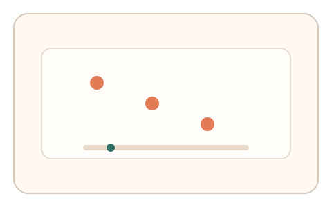
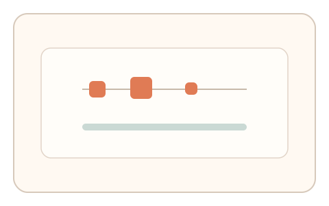
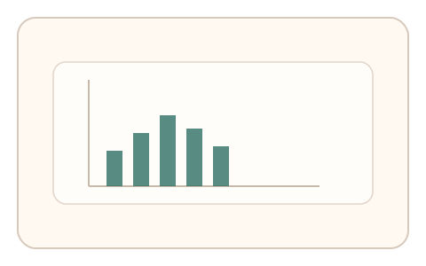

#13
生物肌肉与鼠标运动
已扩展
点击时长微分布
记录按下‑抬起的点击时长分布与微波动，利用稳定而不完美的节律作为人类特征。
概念原文
记录按下与抬起之间的微时长分布，并设置 3-5 次重复任务获取个体化节律。人类点击时长在短时段内有稳定的微波动区间。
把“点击时长的自然波动”当作人体生物性证据。
研究背景
人类在微动作中存在稳定的时间分布与微波动，类似于键击节律在行为生物识别中的使用方式。通过多次点击采样，可形成个体化的时长分布与节律窗口，脚本难以在短时间内精确复刻这种分布。
核心机制
- 设置 3–5 次短点击或轻拖，采集按下‑抬起时长。
- 统计时长分布、均值与方差，并观察微波动。
- 结合点击间隔形成节律特征。
- 允许误差，强调稳定但非完美的分布结构。
用户流程
- 步骤 1：用户根据提示完成一组点击。
- 步骤 2：系统记录每次按下与抬起时长。
- 步骤 3：系统计算分布并输出判定。
判定信号
点击时长分布（均值/方差/偏度）
人类点击时长具有稳定但不完全一致的统计特征。
点击间隔节律
节律稳定性可反映真实操控节拍。
判定逻辑
要求时长分布落在合理区间，并在短序列内保持一致性；过度一致或过度随机均判异常。
对抗面
- 脚本生成伪随机时长分布
- 回放采集到的真实点击序列
防御与缓解
- 随机提示节奏与顺序，降低回放复用
- 联合指针轨迹与微抖动作为辅判
- 多轮短序列交叉比对
可达性与风险
提供键盘或触控替代通道，并允许更宽松的时长窗口。
- 设备或系统级事件合并可能影响时长精度
- 长按习惯可能导致分布偏移
可视化状态

状态 1：点击提示
短序列点击任务，标记点击目标。

状态 2：时长采集
不同点击时长形成微差异。

状态 3：分布判定
统计时长分布与节律窗口。
参考资料
Keystroke dynamics
说明点击/键击节律作为行为特征的可用性。
Behavioral biometrics
说明行为特征可用于身份识别与区分。